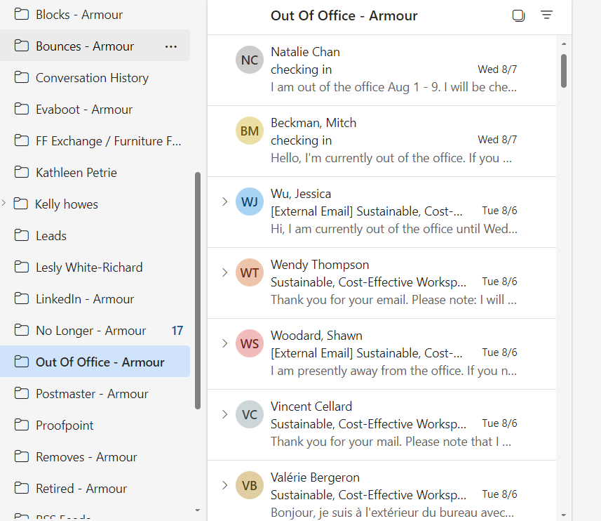
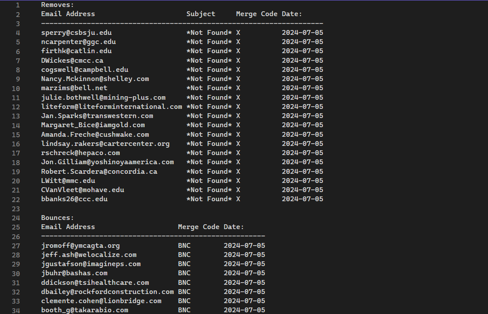

Another project that I worked on for the company, EnviroTech, had me develop a program used to
iterate over the inbox folders of several email accounts, and sort all of the emails in them. The
program’s goal is to sort out (move to another folder) all of the emails which describe a bounce,
a block, or are some automatic response, be it that the recipient is out of office, no longer with
the company, etc.
This program was created for someone who runs email campaigns for EnviroTech. When she runs one
of these campaigns she sends many thousands of emails, and thus receives many responses, a large
proportion of which are automated and do not need to be read individually. When sorting through
her emails, she wants to find any potential leads as easily as possible. For any automated
messages which are not leads but are still important, like those from people being asked to be
removed from the campaign list, she'd like these to be handled automatically.
This program moves all of these emails to an appropriate and marks down each of the mail
addresses which were found to have errors (the email was bounced/blocked) or any email address
which has been requested to be removed from the campaign list, in the EnviroTech database with
a merge code that describes the condition with the email address. All of the changes in a
given run of the program are summarized in a log file.

The folders I set up to move the emails into.

Part of one of the log files generated from running the program.
The program was written in C# and uses the Microsoft.Graph API to access the emails. The two
main challenges with this project were to get the program properly iterating over the emails
and moving the emails into the new folders, and creating an algorithm to sort the emails based
on their contents. I used a key phrase system to sort the emails where each email is sorted
by checking whether the contents of the email (the subject and body) have a key phrase which
belongs to a certain type of email. For example, the program may check if a specific email is
a “no longer with” type of email by checking if it has the phrase “is no longer a member of”.
There were hundreds of flags used in total, and extensive testing was used to make sure that
that the algorithm was near perfect, both in terms of not missing any emails, but also not
flagging any emails that it shouldn’t have.
Creating this program taught me a lot about designing and testing algorithms in a setting like this.
While creating my algorithm I had to spend a lot of time analyzing the contents of the emails and
coming up with the flags. The challenge was finding flags that were not too specific to where all of
the emails could be picked up fairly easily, without too many flags, but also not too broad so that
no emails were picked up that shouldn't have been. Retrospectively I can think of more effective
ways which I could have found flags, and tested and refined the list. Coming back to this project
regularly taught me better and better ways to design algorithms like this, and also taught me to be
attentive to detail.